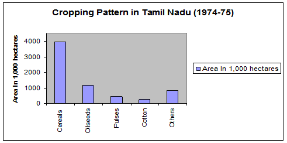
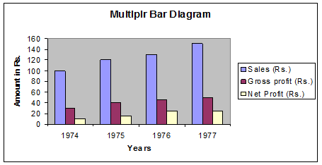
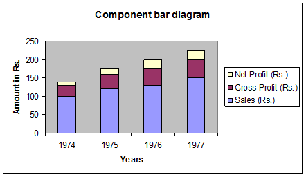
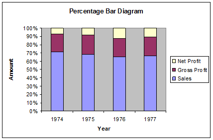
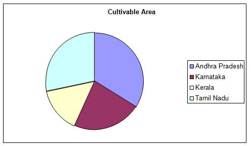

STAM101:: Lecture 02 :: Diagrammatic representation of data

Uses and limitations – simple, Multiple, Component and percentage bar diagrams – pie chart
Diagrams
Diagrams are various geometrical shape such as bars, circles etc. Diagrams are based on scale but are not confined to points or lines. They are more attractive and easier to understand than graphs.
Merits
- Most of the people are attracted by diagrams.
- Technical Knowledge or education is not necessary.
- Time and effort required are less.
- Diagrams show the data in proper perspective.
- Diagrams leave a lasting impression.
- Language is not a barrier.
- Widely used tool.
Demerits (or) limitations
- Diagrams are approximations.
- Minute differences in values cannot be represented properly in diagrams.
- Large differences in values spoil the look of the diagram.
- Some of the diagrams can be drawn by experts only. eg. Pie chart.
- Different scales portray different pictures to laymen.
Types of Diagrams
The important diagrams are
- Simple Bar diagram.
- Multiple Bar diagram.
- Component Bar diagram.
- Percentage Bar diagram.
- Pie chart
- Pictogram
- Statistical maps or cartograms.
In all the diagrams and graphs, the groups or classes are represented on the x-axis and the volumes or frequencies are represented in the y-axis.
Simple Bar diagram
If the classification is based on attributes and if the attributes are to be compared with respect to a single character we use simple bar diagram.
Example
- The area under different crops in a state.
- The food grain production of different years.
- The yield performance of different varieties of a crop.
- The effect of different treatments etc.
Simple bar diagrams Consists of vertical bars of equal width. The heights of these bars are proportional to the volume or magnitude of the attribute. All bars stand on the same baseline. The bars are separated from each others by equal intervals. The bars may be coloured or marked.
Example
The cropping pattern in Tamil Nadu in the year 1974-75 was as follows.
Crops |
Area In 1,000 hectares |
Cereals |
3940 |
Oilseeds |
1165 |
Pulses |
464 |
Cotton |
249 |
Others |
822 |
The simple bar diagram for this data is given below.

Multiple bar diagram
If the data is classified by attributes and if two or more characters or groups are to be compared within each attribute we use multiple bar diagrams. If only two characters are to be compared within each attribute, then the resultant bar diagram used is known as double bar diagram.
The multiple bar diagram is simply the extension of simple bar diagram. For each attribute two or more bars representing separate characters or groups are to be placed side by side. Each bar within an attribute will be marked or coloured differently in order to distinguish them. Same type of marking or colouring should be done under each attribute. A footnote has to be given explaining the markings or colourings.
Example
Draw a multiple bar diagram for the following data which represented agricultural production for the priod from 2000-2004
Year |
Food grains (tones) |
Vegetables (tones) |
Others (tones) |
2000 |
100 |
30 |
10 |
2001 |
120 |
40 |
15 |
2002 |
130 |
45 |
25 |
2003 |
150 |
50 |
25 |
2004 |
|
|
|
|
|
|
|

Component bar diagram
This is also called sub – divided bar diagram. Instead of placing the bars for each component side by side we may place these one on top of the other. This will result in a component bar diagram.
Example:
Draw a component bar diagram for the following data
Year |
Sales (Rs.) |
Gross Profit (Rs.) |
Net Profit (Rs.) |
1974 |
100 |
30 |
10 |
1975 |
120 |
40 |
15 |
1976 |
130 |
45 |
25 |
1977 |
150 |
50 |
25 |

Percentage bar diagram
Sometimes when the volumes of different attributes may be greatly different for making meaningful comparisons, the attributes are reduced to percentages. In that case each attribute will have 100 as its maximum volume. This sort of component bar chart is known as percentage bar diagram.
Percentage = ,
Example:
Draw a Percentage bar diagram for the following data
Using the formula Percentage = , the above table is converted.
Year |
Sales (Rs.) |
Gross Profit (Rs.) |
Net Profit (Rs.) |
1974 |
71.43 |
21.43 |
7.14 |
1975 |
68.57 |
22.86 |
8.57 |
1976 |
65 |
22.5 |
12.5 |
1977 |
66.67 |
22.22 |
11.11 |

Pie chart / Pie Diagram
Pie diagram is a circular diagram. It may be used in place of bar diagrams. It consists of one or more circles which are divided into a number of sectors. In the construction of pie diagram the following steps are involved.
Step 1:
Whenever one set of actual value or percentage are given, find the corresponding angles in degrees using the following formula
Angle =
(or) Angle =
Step 2:
Find the radius using the area of the circle π r2 where value of π is 22/7 or 3.14
Example
Given the cultivable land area in four southern states of India. Construct a pie diagram for the following data.
State |
Cultivable area( in hectares) |
Andhra Pradesh |
663 |
Karnataka |
448 |
Kerala |
290 |
Tamil Nadu |
556 |
Total |
1957 |
Using the formula
Angle =
(or)
Angle =
The table value becomes
State |
Cultivable area |
Andhra Pradesh |
121.96 |
Karnataka |
82.41 |
Kerala |
53.35 |
Tamil Nadu |
102.28 |
Radius = pr2
Here pr2 =1957
r2=
r = 24.96
r= 25 (approx)

| Download this lecture as PDF here |